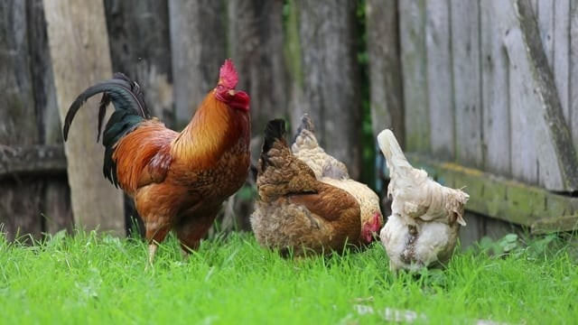

Kuroiler, Broiler and Commercial Layers: A Planning Comparison
Kuroiler, broiler and commercial layer describe birds selected for different purposes and management systems. The correct choice depends on housing, feed, health support, cash flow, labour and a verified market—not on one headline production figure.

The Quick Comparison Table
| Broiler | Layer | Kuroiler | |
|---|---|---|---|
| Raised for | Meat | Eggs | Both (dual purpose) |
| Planning time | Often measured in weeks | Often several months before laying | Depends on whether meat or eggs are the goal |
| Feed planning | Commercial programme required | Consistent layer programme required | Supplier guidance plus the chosen management system |
| Health | Every type can become sick; obtain source and vaccination records and plan biosecurity with qualified guidance | ||
| Cost per chick (approx) | UGX 2,500–3,500 | UGX 3,000–4,000 | UGX 2,000–3,000 |
| Income style | One bulk sale | Daily egg money | Flexible — eggs and meat |
Commercial Broilers: Shorter Production Cycle, Detailed Control
Commercial broilers are selected for rapid meat production, but sale age, live weight, mortality and profit vary widely. Any six-week target or profit figure should be treated as a scenario to test with current chick, feed and buyer quotations—not as an expected result.
Feed intake and target weight must come from the current performance guide for the exact commercial line. Compare the supplier target with local feed availability, brooding equipment, housing, power or heat reliability, veterinary support and buyer specifications.
Commercial Layers: Longer Setup Before Egg Income
Commercial layer projects normally require a rearing period before egg income begins. The length and cost depend on the line, age purchased, feed, mortality, housing, lighting and health programme. Treat any UGX cost per bird as a dated scenario, not a fixed entry price.
Commercial layer targets depend on the strain, age, feed, lighting, health and housing. Use the supplier's current performance guide to build a range of production scenarios, then test those scenarios against verified local egg prices and likely buyers.
Production changes with age and management, so cash-flow planning must include the rearing period, gradual production changes, rejected eggs and the eventual decision to retain or replace the flock.
Kuroiler: An Improved Dual-Purpose Type
Kuroiler was developed as an improved dual-purpose bird. Published developer material describes performance under semi-scavenging conditions, but a household should not assume that scavenging supplies a complete diet or that published weight and egg targets will be achieved locally.
Kuroilers are not part of Unified Farm BLM's current flock. Before buying, confirm that the seller is supplying the claimed type, obtain its age and health records, and ask for the management information intended for that stock.
A Decision Framework, Not a Farm Recommendation
- Purpose: meat, eggs, household use, breeding or a combination?
- Cash flow: how long can the farm pay for feed and care before receiving income?
- Housing: is the space suitable for the age and management system?
- Health support: can source records, vaccines, biosecurity and professional advice be obtained?
- Market: has a real buyer confirmed the product, size, quantity, price and payment terms?
- Records: will each batch or age group be tracked separately?
Unified Farm BLM can describe its current local chickens and availability. Commercial broiler, commercial layer and improved-breed decisions should be checked against current supplier documents and qualified agricultural or veterinary guidance.
Compare Three Budgets Before Buying
Prepare a low, middle and high-cost scenario. For every scenario include chicks or birds, feed, housing preparation, equipment, litter, transport, veterinary support, mortality, rejected products and marketing. Do not put income into the budget until a likely sale quantity and price have been checked.
| Budget question | Low case | Middle case | High case |
|---|---|---|---|
| Feed price and quantity | Enter verified figure | Enter verified figure | Enter verified figure |
| Mortality or non-saleable output | Enter assumption | Enter assumption | Enter assumption |
| Selling price | Buyer quotation | Buyer quotation | Buyer quotation |
| Sale delay | Days or weeks | Days or weeks | Days or weeks |
| Cash remaining | Calculate | Calculate | Calculate |
Source and Arrival Checklist
- Write the seller's name, contact, location and receipt details.
- Record the claimed type, hatch date or age, quantity and sex where applicable.
- Obtain the vaccination and health information for that exact batch.
- Prepare housing, heat, water and feed before collection.
- Record losses or problems on arrival and notify the seller promptly.
- Keep new birds separate under a quarantine plan appropriate to the flock and veterinary advice.
Local Chickens Are a Separate Choice
Local or indigenous chickens should not be described as identical to Kuroiler. Local chickens are the main type raised at Unified Farm BLM. Their growth, laying and mature size vary, so the farm avoids presenting one universal output figure. Buyers should ask about the actual birds available rather than assuming commercial-line performance.
How to Use the Figures Responsibly
Dates, prices and performance targets become stale. Beside every figure, write its source and date. Mark whether it is a breeder target, a seller's statement, a local quotation or your own measured result. These categories should not be mixed.
Sources and limitations
Breed performance, feed use and prices vary by hatchery, management and market. Treat every figure as an educational comparison and confirm current specifications and quotations before investing.
- Keggfarms: developer information about Kuroiler
- Hendrix ISA: commercial layer information and management resources
- Cobb Genetics: Cobb 500 information
- FAO Gateway to poultry production and products
- WOAH: Newcastle disease